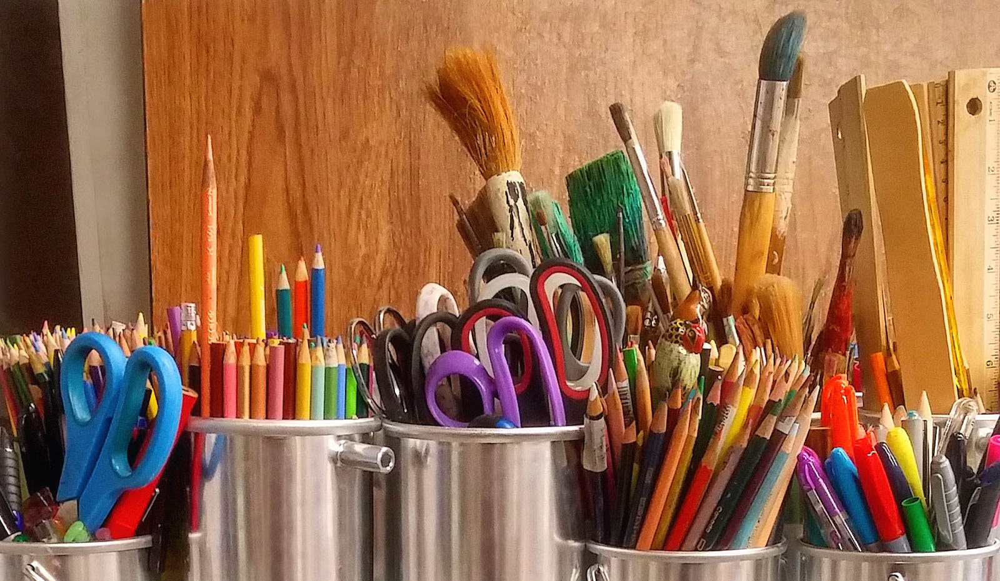

Anyone Can Make Art
This is for anyone who would like to know more about the different types of art media. This is simply a beginners list, but hopefully it will help you begin your journey into creating!
You can find more art inspiration online as well!
